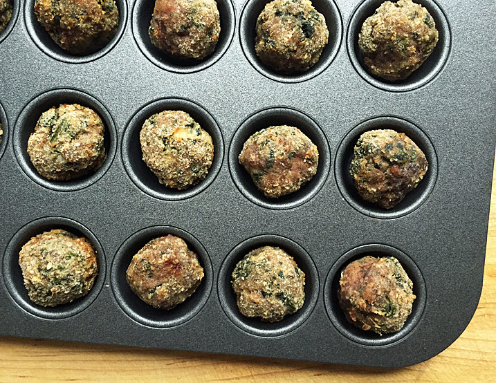

Meatballs

Description
A triple-meat blend is the secret to these always-moist, homemade, baked meatballs. These are
the ultimate culinary multitaskers for carnivores.
They can be small or big. They can be built upon beef, pork, chicken, turkey, lamb, or any
combination thereof including fish. They can be stuffed or coated. They can be lavishly
seasoned or simply salted. Then when it comes time to meet the heat, meatballs can be
roasted, baked, simmered, sautéed, braised, fried, or grilled.
I often make up big batches of these guys, bake ’em, cool and freeze ’em in muffin pans, then
transfer to heavy-duty zip-top bags for storage. They’ll keep for up to six months and you
can revive them simply by simmering for a few minutes in a pot of sauce or soup.
This recipe first appeared in Season 9 of Good Eats.
Ingredients
- 8 ounces ground pork butt
- 8 ounces ground lamb shoulder
- 8 ounces ground beef round
- 5 ounces frozen spinach, thawed and drained
- 1/2 cup finely grated Parmesan cheese
- 1 large egg
- 1 1/2 teaspoons dried basil
- 1 1/2 teaspoons dried parsley
- 1 teaspoon garlic powder
- 1 teaspoon kosher salt
- 1/2 teaspoon red pepper flakes
- 1/2 cup bread crumbs
Steps
- Heat oven to 400ºF.
- Combine the pork, lamb, beef, spinach, cheese, egg, basil, parsley, garlic powder, salt,
red pepper flakes, and 1/4 cup of the bread crumbs in a large mixing bowl. Using your
hands, mix until all ingredients are well incorporated. Use immediately or place in
refrigerator for up to 24 hours.
- Place the remaining 1/4 cup of bread crumbs into a small bowl. Cover a scale with
plastic wrap, weigh meatballs into 1 1/2-ounce (43-gram) portions, and place on a
half-sheet pan. Using clean hands, shape the meatballs into rounds, roll in the
breadcrumbs, and place in miniature muffin tin cups. Bake until golden and cooked
through, about 20 minutes.